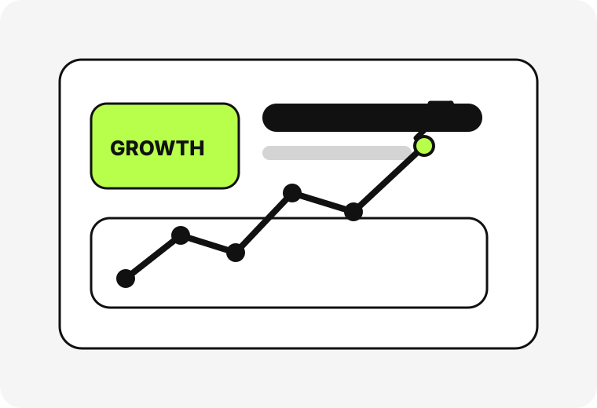

真实使用场景
先看用户在什么场景下用，再决定页面和转化动作怎么改。
Turn traffic, activation, subscription, and conversion into a repeatable system.

某商银行掌注册拉新，众安保险订阅推广，某信信用卡申办，某果短剧订阅推广… 借助自有app流量/渠道/私域，小成本见证大数据
不是只给一份方案，而是把页面、投放、数据和运营动作都接起来。
先看用户在什么场景下用，再决定页面和转化动作怎么改。
不是只看报表，而是把报表、落地页、素材和关键动作一起看。
真正有用的不是方案本身，而是改完以后真的上线的那一版。
讲清楚问题怎么找、怎么拆、怎么改，不说虚的。
讲清楚问题怎么找、怎么拆、怎么改，不说虚的。
讲清楚问题怎么找、怎么拆、怎么改，不说虚的。
讲清楚问题怎么找、怎么拆、怎么改，不说虚的。